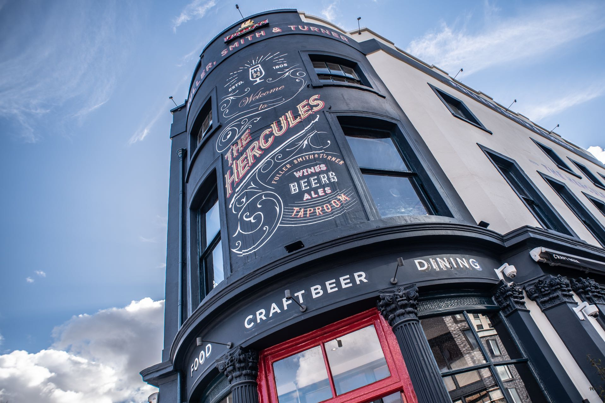

London Tiddlywinks Collective
Non-Cogito Modo Poto



We are the London Tiddlywinks Collective. Currently we generally meet every Tuesday from about 7pm upstairs in The Hercules (2 Kennington Road, SE1 7BL, London, UK) in Lambeth (opposite Lambeth North on the Bakerloo Line and just a few miutes' walk from Waterloo station). All are welcome to join us.
News
- Popular Youtuber Tom Scott recently made video about the game of Tiddlywinks which features several LTC regulars has now appeared on Nebular. It will be freely available on Youtube on September 21st 2026.
- LTC regular Ben Fairbairn won the not-quite-inaugural-but-first-in-bloomin'-ages Manchester Open on September 12th 2026.
- This year's London Open Tournament will be held upstairs in The Hercules on Sunday October 4th 2026. Traditional 10AM for a 10:30AM squidge-off. All Welcome.
- On October 23rd 2026 World Pairs 52 will be played. LTC regular Matthew Rose along with John Mapley (defending champions) will play against David Lockwood and Max Lockwood. The event will be played in Cambridge.
Links
Contact
Simply turning up to The Hercules as mentioned above should get our attention. for anything else email Ben Fairbairn on
b.t.fairbairn[symbol that resembles a small wink squoping a large wink]gmail.com